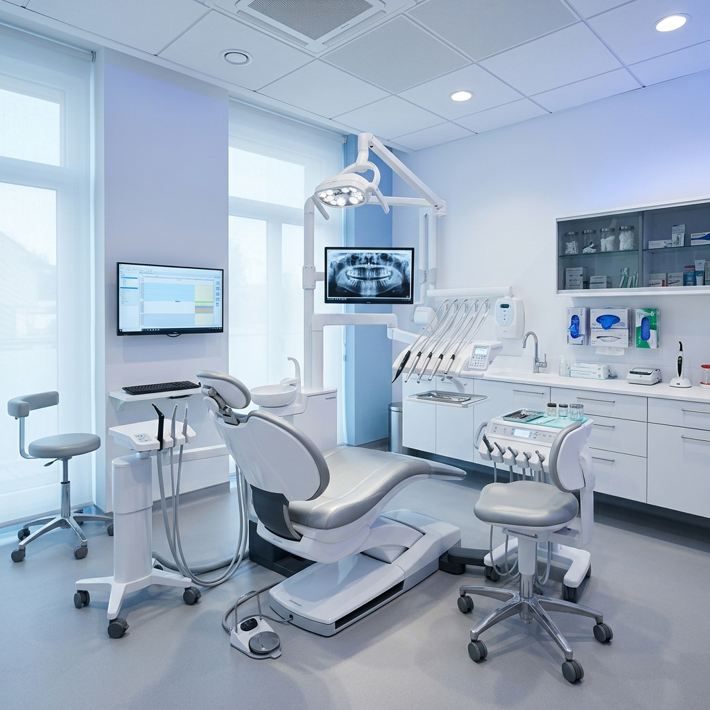

Supreme Excellence
Department of Dental
Unlock a lifetime of healthy smiles. Comprehensive clinical dental treatments and advanced facial aesthetics in our world-class facility.
Radiant Oral Health
Overview
Supreme Smile is the Dental and Aesthetics Department of the renowned Supreme Specialty Hospital located in Padur. Our commitment to excellence drives us to deliver a wide spectrum of comprehensive dental services and aesthetic treatments for the oral health, well-being, and radiance of our valued patients.
Our advanced facility, experienced team of dental professionals, and patient-centric approach make us the best dental hospital in Padur. We provide solutions to challenging dental issues including tooth decay, gum disease, and misaligned teeth, cultivated through excellent oral hygiene practices.

Our Core Specialties
Advanced Dental Solutions
Root Canal
Essential procedure for saving infected teeth, relieving pain, and preserving your natural smile.
Wisdom Tooth
Skilled extraction of problematic teeth causing discomfort, ensuring smooth and painless processes.
Dental Aligners
A customized, discrete alternative to traditional braces for achieving a straighter, aligned smile.
Dental Implants
Meticulously performed procedures to restore your smile’s functionality and clinical aesthetics.
PRP & Facelifts
Advanced cosmetic rejuvenation including Platelet-Rich Plasma therapy and the Vampire Facelift.
Solidifying Oral Health Excellence
Shining Light on Common Dental Concerns
Maintaining your oral health is fundamental to your overall well-being. However dental problems can afflict individuals of all ages, from children to adults. If left unattended, it can cause discomfort, pain, and even systemic health concerns. Hence, Accurate diagnosis is the stepping stone for effective treatment and prevention, allowing you to unlock a lifetime of healthy smiles.
Our team of expert dentists at Supreme Smile, provide solutions even to challenging dental issues. These issues encompass common concerns like tooth decay, gum disease, bad breath, tooth sensitivity, and misaligned teeth. To thwart these challenges, we make you cultivate good oral hygiene practices and even offer the best Dental Treatments.
Prioritizing oral health and seeking professional guidance can lead to a lifetime of radiant smiles. Supreme Smile boasts a team of experienced orthodontists who provide expert care to each patient, solidifying our reputation as the best dental hospital in Kelambakkam.
Supreme Smile Commitment
Experience Excellence in Oral Care
When it comes to your oral health, choosing the right dental hospital is paramount. At Supreme Smile, our dedication revolves around providing nothing short of the finest dental care. Our relentless pursuit of excellence has earned us the reputation as the best dental hospital in Padur. Don't compromise on your oral health. Visit Supreme Smile today for comprehensive dental services that cater to your needs. Our team of experts is here to provide you with a confident and healthy smile that lasts a lifetime.
Dental Guidance Experts
Our Experts
Dr. Jessica Yolanda Jeevitha
BDS
MDS (Oral & Maxillofacial Surgery)
Smile Guidance
Frequently Asked Questions
You should visit the dentist every six months for a routine check-up and cleaning. Regular visits help detect dental issues early, maintain oral hygiene, and prevent more serious problems. Your dentist may recommend more frequent visits based on your oral health condition.
During a dental check-up, your dentist examines your teeth, gums, and mouth for any signs of decay, gum disease, or other issues. It usually includes a professional cleaning to remove plaque and tartar, followed by personalized advice on maintaining good oral hygiene.
In a dental emergency like a broken tooth, severe pain, or bleeding, contact your dentist immediately. Rinse your mouth with warm water, apply a cold compress to reduce swelling, and avoid chewing on the affected area. Prompt care helps prevent complications and relieves discomfort.
Yes, teeth whitening is generally safe when done by a dental professional. It uses approved bleaching agents that effectively lighten teeth without damaging enamel. Over-the-counter kits are available, but in-clinic treatments offer safer, faster, and more reliable results under expert supervision.